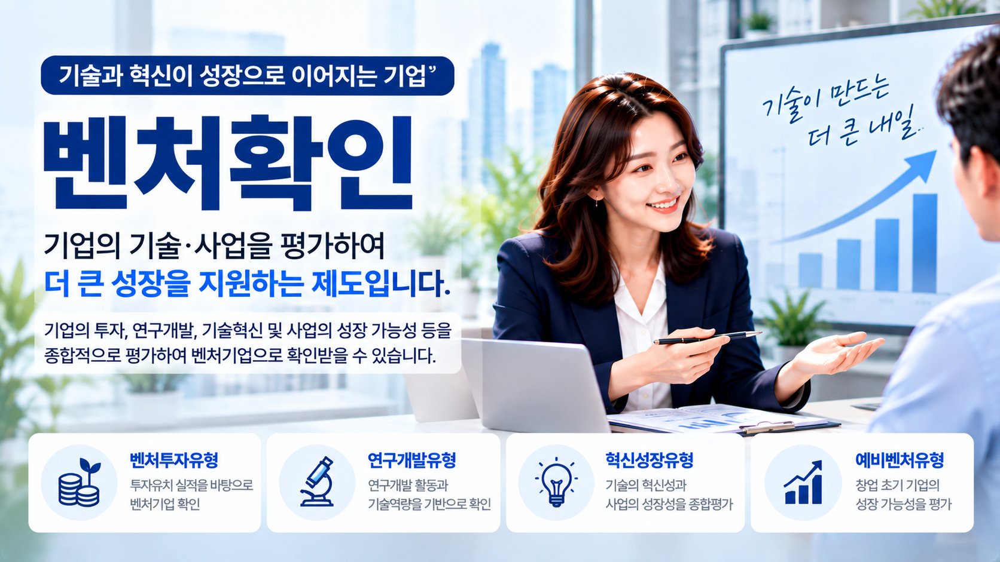
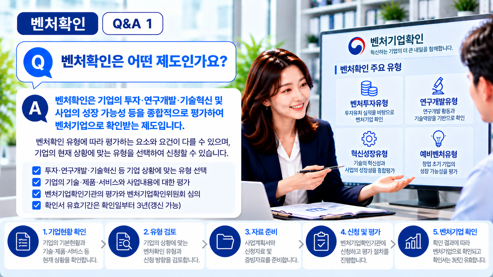
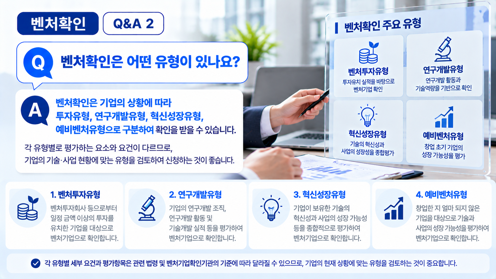
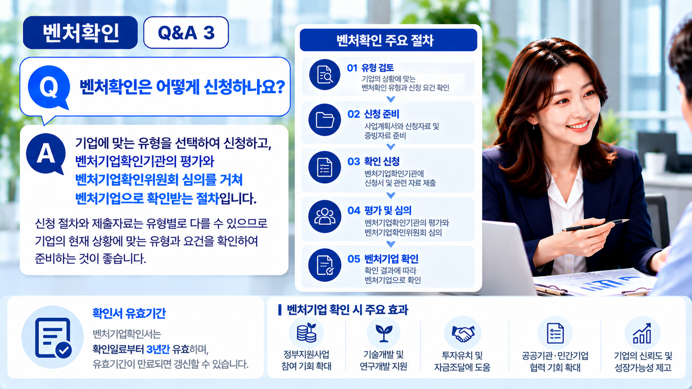

01. 벤처확인이란?
벤처확인은 관련 법령에서 정한 요건과 평가절차에 따라 기업이 벤처기업에 해당하는지를 확인하는 제도입니다.
기업마다 투자유치 여부와 연구개발 활동, 보유 기술·제품·서비스 및 사업화 단계 등이 다르기 때문에 먼저 기업의 현재 상황을 파악하는 것이 중요합니다.

02. 벤처확인 유형을 먼저 검토합니다
벤처확인은 기업의 현재 상황에 따라 검토하는 유형과 세부요건이 달라질 수 있습니다.
| 구분 | 주요 검토 방향 |
|---|---|
| 벤처투자유형 | 투자유치 현황과 관련 요건 검토 |
| 연구개발유형 | 연구개발 활동과 관련 요건 및 평가 검토 |
| 혁신성장유형 | 기술의 혁신성과 사업의 성장성 등을 검토 |
| 예비벤처유형 | 창업 준비단계에서 기술성과 성장 가능성 등을 검토 |
※ 실제 적용 유형과 세부요건은 기업의 상황 및 관련 기준에 따라 구체적으로 확인할 필요가 있습니다.

03. 기업의 기술·제품·서비스를 확인합니다
특히 기술의 혁신성과 사업의 성장 가능성 등을 평가받는 경우에는 기업이 현재 어떤 기술·제품·서비스를 개발하거나 사업화하고 있는지 명확하게 설명할 수 있어야 합니다.
단순히 제품을 소개하는 것에 그치기보다 현재 기업이 추진하고 있는 사업의 내용과 기술·제품·서비스의 특징을 확인하는 것이 필요합니다.
04. 기술개발과 사업화 현황을 확인합니다
기술·제품·서비스가 어떤 과정을 거쳐 개발되었는지, 현재 어느 단계까지 진행되어 있는지 등을 확인합니다.
- 현재 개발하거나 사업화하고 있는 기술·제품·서비스
- 기술개발 및 사업화 진행상태
- 기술개발 실적 및 관련 활동
- 지식재산권 등 보유 현황
- 대표자 및 주요 인력의 역할
다만 실제 확인해야 하는 내용과 자료는 신청하려는 벤처확인 유형에 따라 달라질 수 있습니다.
05. 시장과 성장계획도 중요한 검토사항입니다
기술이나 제품 자체뿐 아니라 해당 제품·서비스를 필요로 하는 고객과 시장, 향후 사업을 어떻게 확대할 것인지도 함께 살펴볼 필요가 있습니다.
목표고객과 시장의 특성, 경쟁 상황, 사업화 현황과 향후 추진계획 등을 현재 기업의 사업내용과 연결하여 검토하는 것이 중요합니다.
06. 신청자료와 증빙자료를 준비합니다
검토할 벤처확인 유형이 정해지면 해당 유형에서 요구하는 신청정보와 자료를 확인합니다.
기업현황과 사업내용뿐 아니라 신청내용을 뒷받침할 수 있는 관련 자료도 함께 확인해야 하므로, 현재 기업이 보유하고 있는 자료부터 점검하는 것이 좋습니다.
※ 필요한 자료는 신청유형과 기업의 상황에 따라 달라질 수 있습니다.

07. 벤처확인은 이런 흐름으로 진행됩니다
신청 이후에는 해당 유형에 따른 평가와 심의 등 필요한 절차가 진행되며, 그 결과에 따라 벤처기업 해당 여부가 확인됩니다.
08. 신청 전 유의사항
벤처확인은 특정 기술이나 특허를 보유하고 있다는 사실만으로 결과가 결정되는 절차로 보기 어렵습니다.
먼저 기업의 투자 및 연구개발 현황, 기술·제품·서비스와 사업화 상태 등을 살펴보고 기업에 맞는 유형과 세부요건을 확인하는 것이 좋습니다.
특히 혁신성장유형 등을 검토하는 경우에는 기업의 기술과 사업내용, 시장 및 성장계획 등이 서로 일관되게 설명될 수 있도록 현재 상황을 충분히 점검할 필요가 있습니다.
우리 기업은 어떤 방향으로 준비해야 할까요?
간단한 자가진단을 이용하거나 기업의 현재 사업내용과 준비상황을 기준으로 상담을 신청해 보세요.